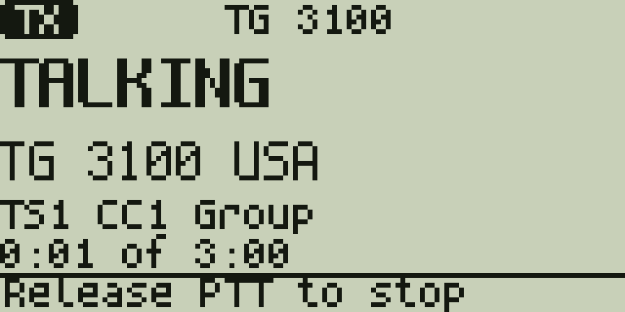
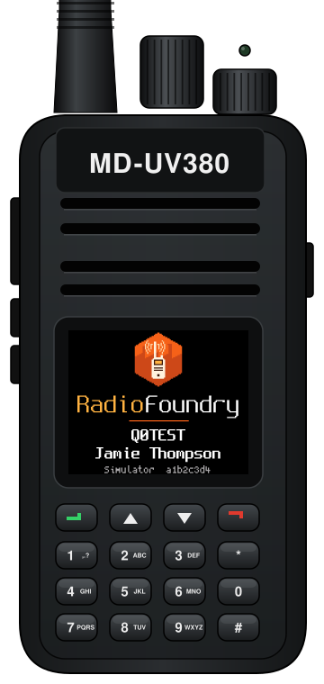

Full
Every feature the radio supports.
Omite: Nada
Firmware multimodo de código abierto para radios digitales: DMR, P25, NXDN y FM. Licencia MIT.
Gratis para siempre. Se instala en tu radio directamente desde el navegador, en cualquier sistema operativo; sin descargar software.



Compatible
FM·DMR·P25·NXDN · 136-174 / 400-480 MHz · AM de banda aérea 108-137 MHz · FM comercial 87-108 MHz

Retevis RT84
Compatible
FM·DMR·P25·NXDN · 136-174 / 400-480 MHz

Baofeng DM-1801
Compatible
FM·DMR·P25·NXDN · 136-174 / 400-470 MHz · AM de banda aérea 108-137 MHz · FM comercial 87-108 MHz

Kydera CDR-300UV
Compatible
FM·DMR·P25·NXDN · 136-174 / 400-480 MHz · FM comercial 87-108 MHz

TYT MD-390, Retevis RT3
Compatible
FM·DMR · 400-480 MHz or 136-174 MHz (one band per radio)

TYT MD-UV390, TYT MD-UV390 Plus 10 W
Compatible
FM·DMR·P25·NXDN · 136-174 / 400-480 MHz

Compatible
FM·DMR·P25·NXDN · 136-174 / 400-480 MHz

Retevis RT90
Compatible
FM·DMR·P25·NXDN · 136-174 / 400-480 MHz

Compatible
FM·DMR·P25·NXDN · 902-928 MHz
Every feature the radio supports.
Omite: Nada
For amateur radio. Leaves out business features.
Omite: Basic privacy (Motorola / Anytone BP), Motorola TMS text format, ARS registration, LRRP location, Control station mode (boot as network, PC answers data, fixed link), SNMP v2c agent and traps (USB and over the air)
For business and public service radios. Leaves out amateur-only features.
Omite: MMDVM hotspot, APRS: AFSK positions, status, messages; DMR positions; KISS TNC
Personaliza tu propia compilación del software con las funciones que quieras, directamente desde el navegador.